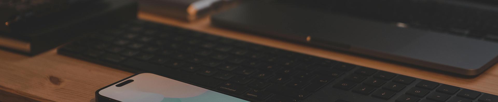

Experience
-
- Creating user flows, wireframes, high-fidelity designs, and interactive prototypes based on user needs and business requirements.
- Analyzing user behavior, identifying usability issues, and proposing solutions to improve user experience and conversion rates.
- Collaborating closely with product owners, developers, and stakeholders to define requirements and deliver effective solutions.
- Presenting design concepts, explaining design decisions, and recommending improvements based on user and business needs.
-
- Designing wireframes, prototypes, user flows based on the requirements.
- Studying and analysing the behaviour of the users, collecting feedback to find the best areas to improve.
- Creating, developing and maintaining design systems.
- Working closely with development team.
- Consulting projects with product owners and stakeholders.
Apps: Traficar, Express Car Rental, Core Insurance, Tennisphere, SellTool Lite, Core Sharing Business and more
-
- Designing website wireframes and layouts based on client briefs.
- Creating visual assets and preparing design files for the development team.
- Collaborating with developers during implementation to ensure consistency across styles, components, and visual elements.
-
- Designing website wireframes, visual identities, and marketing materials for clients.
- Translating client requirements into creative and functional design solutions.
- Presenting design concepts, gathering feedback, and refining final deliverables.
Clients: Adcraft, Only Comfort, Elmax, Untype, Better Vision Agency, ESN and more
-
- Designing and developing responsive websites using WordPress.
- Customizing website layouts and functionality based on project requirements.
- Collaborating with team members to deliver functional and visually consistent websites.
Education
- 2018 – 2019
Art & Design, ErasmusInstituto Politécnico do Porto
- 2017 – 2020
Design, Bachelor's degreeBialystok University of Technology
Skills
Tools
Languages

Contact
Whether you have a question or just want to connect, feel free to reach out at:
marcin.zajko97@gmail.com